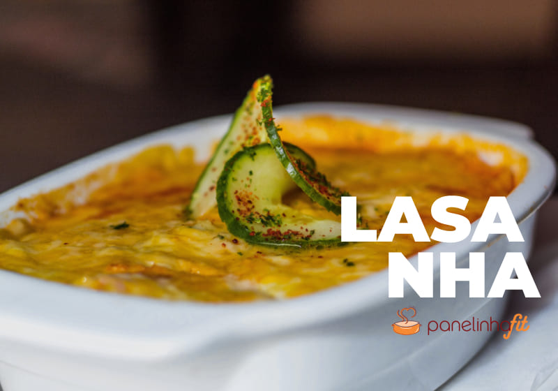

INGREDIENTES:
Modo de Preparo: Deixe o forno pré-aquecendo a 200º; Fatie a abobrinha em fatias finas e tempere; Leve a uma frigideira antiaderente e deixe dourar dos dois lados; Unte uma fôrma e comece colocando uma camada de molho de tomate para cobrir todo o fundo do recipiente; Após isso, coloque uma camada de abobrinha que foi dourada, então uma de presunto e outra de mussarela; Repita o processo até acabar os ingredientes; Por fim, leve o recipiente ao forno por cerca de 20 a 25 minutos, ou até dourar.